Portrait 412 × 900 and landscape 900 × 412. Open the per-page sheet for original comparisons and desktop context.
Before / after sheetRunnable mock
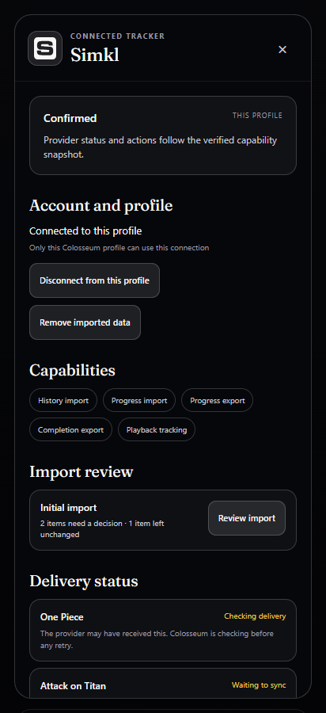
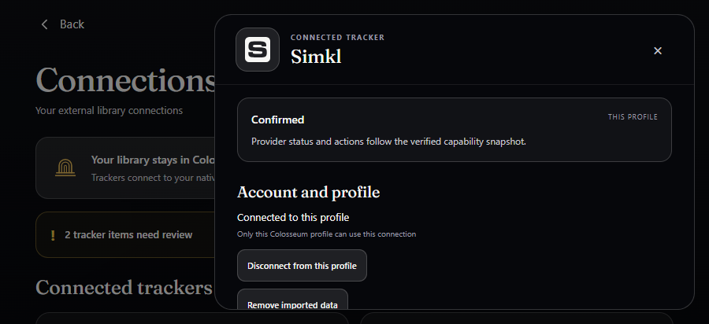
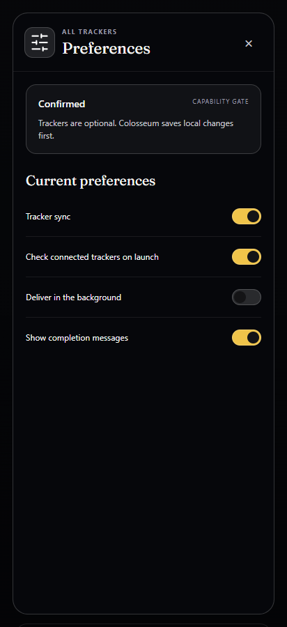
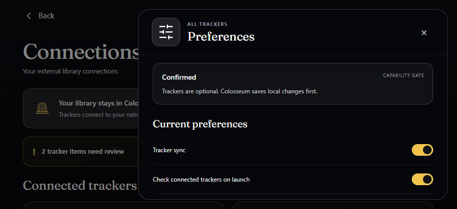
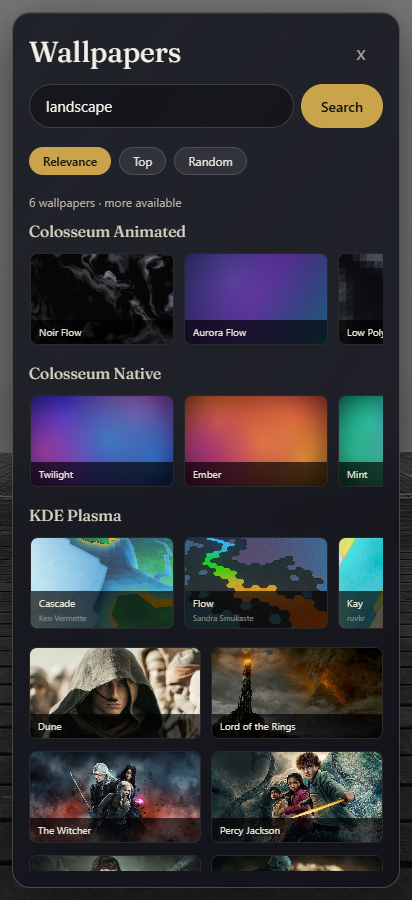
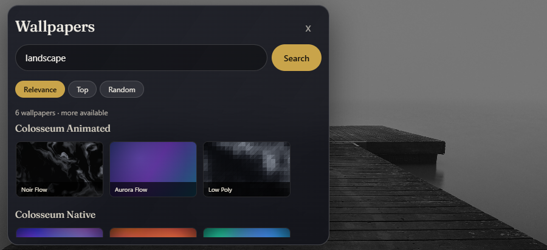
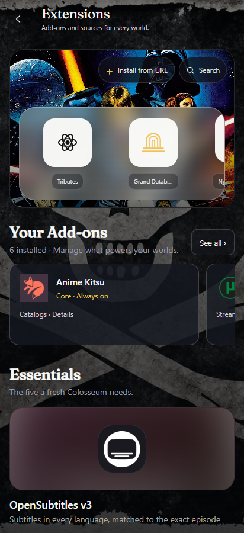
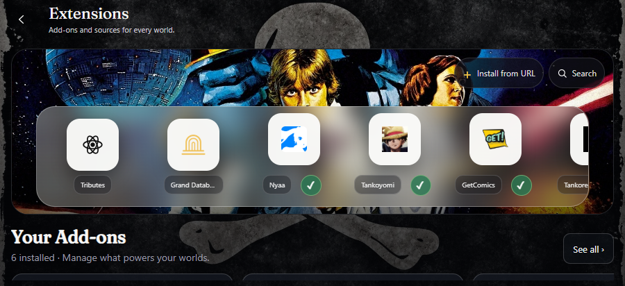
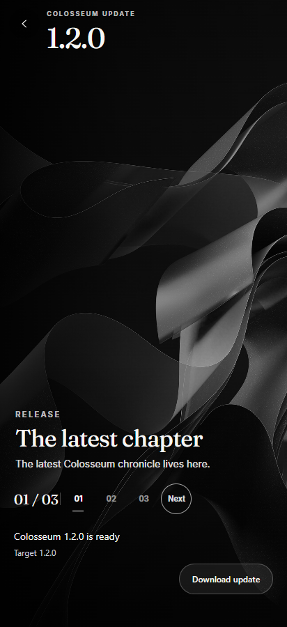
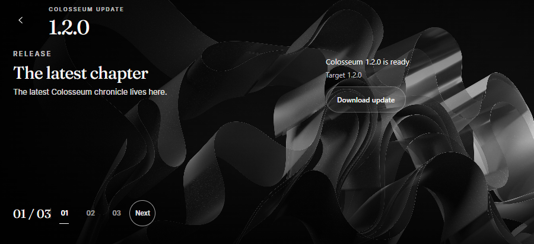
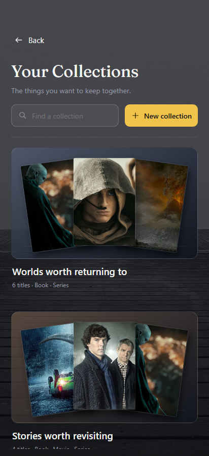
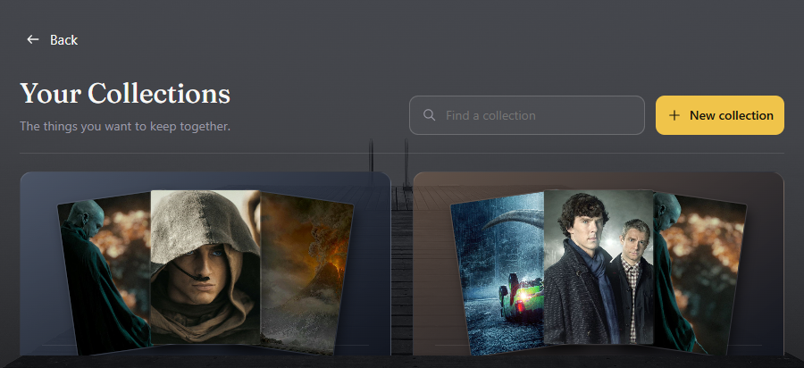
Browser evidence only. Approved design authority: frozen QML a40f66be06f22cdbe75e97e7dc4f1108ab2f5d41. Original worker HTML is a comparison artifact, not an approved native application capture.